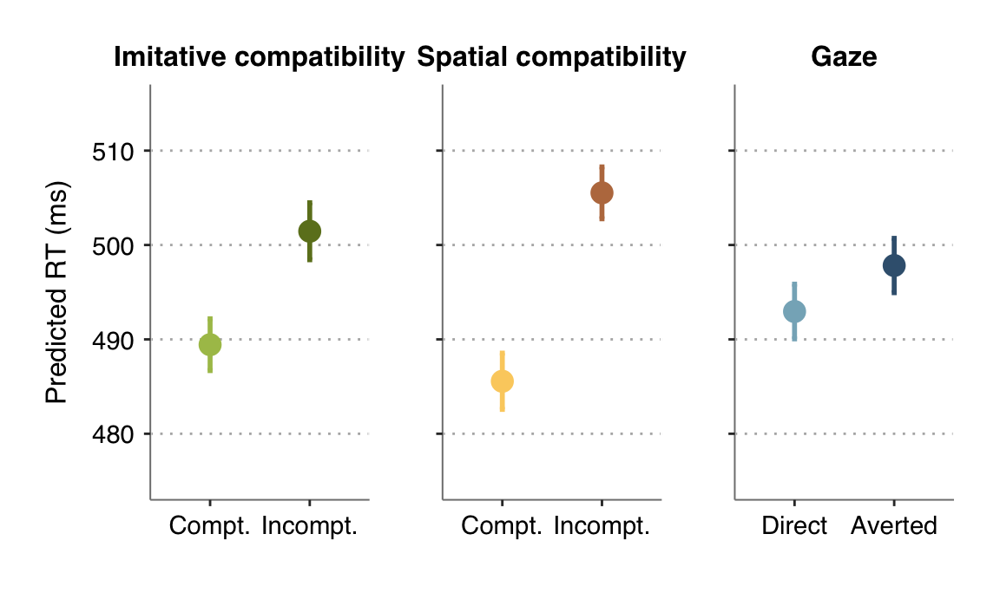
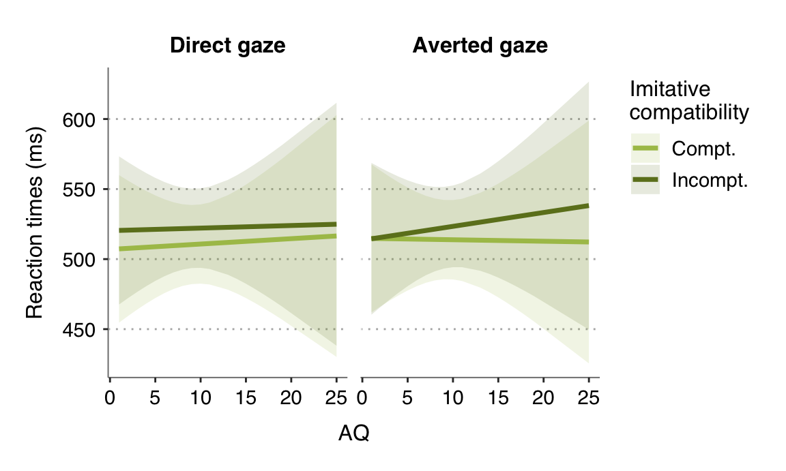

Main effects
The main effects of Imitative and Spatial confirmed the occurrence of compatibility effects: correct finger movements were faster when participants observed an imitatively (spatially) compatible action vs. an imitatively (spatially) incompatible action. The significant main effect of Gaze indicates that responses following averted gaze were slower than following direct gaze.
# IMITATIVE COMPATIBILITY
# ~~~~~~~~~~~~~~~~~~~~~~~
# means & confidence intervals (within-subject, method from Morey 2008)
desc.rt.ic <- summarySEwithin(d.trial.rt, measurevar='rt', betweenvars=NULL, withinvars=c('imitative'), idvar=c('id'), na.rm=FALSE, conf.interval=0.95)
# figure
fig.rt.ic <- ggplot(desc.rt.ic, aes(y=rt, x=imitative, color=imitative)) +
# bar graphs with means and CI
geom_point(size=4) +
geom_errorbar(aes(ymin=rt-ci, ymax=rt+ci), width=0.05, size=line_width-0.5) +
# format
scale_color_manual(values=color_imitative) +
scale_x_discrete(labels=compt_labels) +
ggtitle('Imitative compatibility') +
labs(x='', y='Predicted RT (ms)') +
ylim(475, 515) +
my_theme +
theme(
axis.title.x=element_blank(),
legend.position='none'
)
# SPATIAL COMPATIBILITY
# ~~~~~~~~~~~~~~~~~~~~~
# means & confidence intervals (within-subject, method from Morey 2008)
desc.rt.sc <- summarySEwithin(d.trial.rt, measurevar='rt', betweenvars=NULL, withinvars=c('spatial'), idvar=c('id'), na.rm=FALSE, conf.interval=0.95)
# figure
fig.rt.sc <- ggplot(desc.rt.sc, aes(y=rt, x=spatial, color=spatial)) +
# bar graphs with means and CI
geom_point(size=4) +
geom_errorbar(aes(ymin=rt-ci, ymax=rt+ci), width=0.05, size=line_width-0.5) +
# format
scale_color_manual(values=color_spatial) +
scale_x_discrete(labels=compt_labels) +
ggtitle('Spatial compatibility') +
labs(x='', y='Predicted RT (ms)') +
ylim(475, 515) +
my_theme +
theme(
axis.title=element_blank(),
axis.text.y=element_blank(),
legend.position='none'
)
# GAZE
# ~~~~
# means & confidence intervals (within-subject, method from Morey 2008)
desc.rt.gaze <- summarySEwithin(d.trial.rt, measurevar='rt', betweenvars=NULL, withinvars=c('gaze'), idvar=c('id'), na.rm=FALSE, conf.interval=0.95)
# figure
fig.rt.gaze <- ggplot(desc.rt.gaze, aes(y=rt, x=gaze, color=gaze)) +
# bar graphs with means and CI
geom_point(size=4) +
geom_errorbar(aes(ymin=rt-ci, ymax=rt+ci), width=0.05, size=line_width-0.5) +
# format
scale_color_manual(values=color_gaze) +
scale_x_discrete(labels=c('Direct', 'Averted')) +
ggtitle('Gaze') +
labs(x='', y='Predicted RT (ms)') +
ylim(475, 515) +
my_theme +
theme(
axis.title=element_blank(),
axis.text.y=element_blank(),
legend.position='none'
)
# combine figures
# ~~~~~~~~~~~~~~~~
fig.rt.ic + fig.rt.sc + fig.rt.gaze

descr.rt.maineffects <- cbind(desc.rt.ic[,c(1,3:6)], data.frame(' '=c(' ', ' ')), desc.rt.sc[,c(1,3:6)], data.frame(' '=c(' ', ' ')), desc.rt.gaze[,c(1,3:6)])
colnames(descr.rt.maineffects) <- c('Imitative', 'M', 'SD', 'SE', 'CI', ' ','Spatial', 'M', 'SD', 'SE', 'CI', ' ','Gaze', 'M', 'SD', 'SE', 'CI')
knitr::kable(descr.rt.maineffects, digits=2, caption='Summary statistics for main effects (RT)') %>%
kable_styling(full_width=F, position='center', c('hover', 'condensed', 'responsive'))
Summary statistics for main effects (RT)
|
Imitative
|
M
|
SD
|
SE
|
CI
|
|
Spatial
|
M
|
SD
|
SE
|
CI
|
|
Gaze
|
M
|
SD
|
SE
|
CI
|
|
compt
|
489.44
|
118.05
|
1.40
|
2.75
|
|
compt
|
485.56
|
128.51
|
1.52
|
2.98
|
|
direct
|
492.95
|
124.12
|
1.48
|
2.90
|
|
incompt
|
501.46
|
128.44
|
1.54
|
3.02
|
|
incompt
|
505.53
|
116.57
|
1.40
|
2.75
|
|
averted
|
497.83
|
122.96
|
1.47
|
2.88
|
3-way interaction
The significant 3-way interaction between AQ:Imitative:Gaze suggests that the influence of gaze on imitative compatibility varied as a function of autistic traits. To follow-up the 3-way interaction, we tested the conditional effects of AQ on imitative compatibility for direct gaze and averted gaze conditions separately.
Results from this GLMM indicated that the difference in RTs between imitatively incompatible and imitatively compatible trials (i.e., imitative effect) following averted gaze increased with the level of autistic traits. For direct gaze, however, the slopes for the effect of AQ on imitative compatible and incompatible conditions did not significantly differ.
# predicted effects
rt.interact.pred <- get_model_data(m.rt, type='pred', terms=c('aq_cen', 'imitative', 'gaze'))
names(rt.interact.pred)[names(rt.interact.pred)=='x'] <- 'aq'
names(rt.interact.pred)[names(rt.interact.pred)=='group'] <- 'imitative'
names(rt.interact.pred)[names(rt.interact.pred)=='facet'] <- 'gaze'
# back-transform mean-centered AQ values for plotting
rt.interact.pred$aq <- rt.interact.pred$aq + attr(d.trial.rt$aq_cen, 'scaled:center')
# plot predicted effects
fig.rt.interact <- ggplot(rt.interact.pred, aes(y=predicted, x=aq, group=imitative)) +
# predicted fixed effect of mood
geom_ribbon(aes(ymin=conf.low, ymax=conf.high, fill=imitative), alpha=.15, color='transparent') +
geom_line(aes(linetype=imitative, color=imitative), size=line_width-0.25) +
facet_grid(~gaze, labeller=labeller(gaze=gaze_labels)) +
# format
scale_color_manual(values=color_imitative, name='Imitative\ncompatibility', labels=compt_labels) +
scale_fill_manual(values=color_imitative, name='Imitative\ncompatibility', labels=compt_labels) +
scale_linetype_manual(values=c('solid', 'solid'), name='Imitative\ncompatibility', labels=compt_labels) +
labs(x='AQ', y='Reaction times (ms)') +
my_theme +
theme(panel.grid.minor=element_line(colour='grey70', size=0.1, linetype='solid'))
fig.rt.interact

# compute the conditional effects of imitative*aq for each level of gaze
m.rt.interaction <- glmer(rt ~ gaze/imitative*aq_cen + (1|id) + (1|stimulus),
data=d.trial.rt, family=inverse.gaussian(link='identity'),
control=glmerControl(optimizer='Nelder_Mead', optCtrl=list(maxfun=2e5)))
summary(m.rt.interaction, corr=F)
## Generalized linear mixed model fit by maximum likelihood (Laplace
## Approximation) [glmerMod]
## Family: inverse.gaussian ( identity )
## Formula: rt ~ gaze/imitative * aq_cen + (1 | id) + (1 | stimulus)
## Data: d.trial.rt
## Control:
## glmerControl(optimizer = "Nelder_Mead", optCtrl = list(maxfun = 2e+05))
##
## AIC BIC logLik deviance df.resid
## 164021.3 164104.4 -81999.7 163999.3 14036
##
## Scaled residuals:
## Min 1Q Median 3Q Max
## -3.3584 -0.6897 -0.0795 0.5855 4.9957
##
## Random effects:
## Groups Name Variance Std.Dev.
## stimulus (Intercept) 3.229e+01 5.68276
## id (Intercept) 6.449e+02 25.39530
## Residual 6.115e-05 0.00782
## Number of obs: 14047, groups: stimulus, 64; id, 60
##
## Fixed effects:
## Estimate Std. Error t value Pr(>|z|)
## (Intercept) 528.38997 8.33559 63.390 < 2e-16 ***
## gaze1 -4.67046 1.36420 -3.424 0.000618 ***
## aq_cen 0.28224 2.73523 0.103 0.917815
## gazedirect:imitative1 11.58000 1.88435 6.145 7.98e-10 ***
## gazeaverted:imitative1 9.07689 1.94394 4.669 3.02e-06 ***
## gaze1:aq_cen -0.05738 0.25287 -0.227 0.820480
## gazedirect:imitative1:aq_cen -0.27456 0.35265 -0.779 0.436225
## gazeaverted:imitative1:aq_cen 1.07746 0.36248 2.972 0.002954 **
## ---
## Signif. codes: 0 '***' 0.001 '**' 0.01 '*' 0.05 '.' 0.1 ' ' 1
## convergence code: 0
## Model failed to converge with max|grad| = 0.0025866 (tol = 0.002, component 1)
# >> simple slopes
m.rt.interaction.slopes <- interactions::sim_slopes(m.rt.interaction, pred=aq_cen, modx=imitative, mod2=gaze)
huxtable::as_huxtable(m.rt.interaction.slopes)
| gaze = direct |
| Value of imitative |
Slope of aq_cen |
| compt |
0.391300151407427 (0.662926143929173) |
| incompt |
0.116454059500687 (2.79699145518187) |
| gaze = averted |
| Value of imitative |
Slope of aq_cen |
| compt |
-0.227352913227075 (2.64727338447338) |
| incompt |
0.850127687609205 (2.72644063639414) |